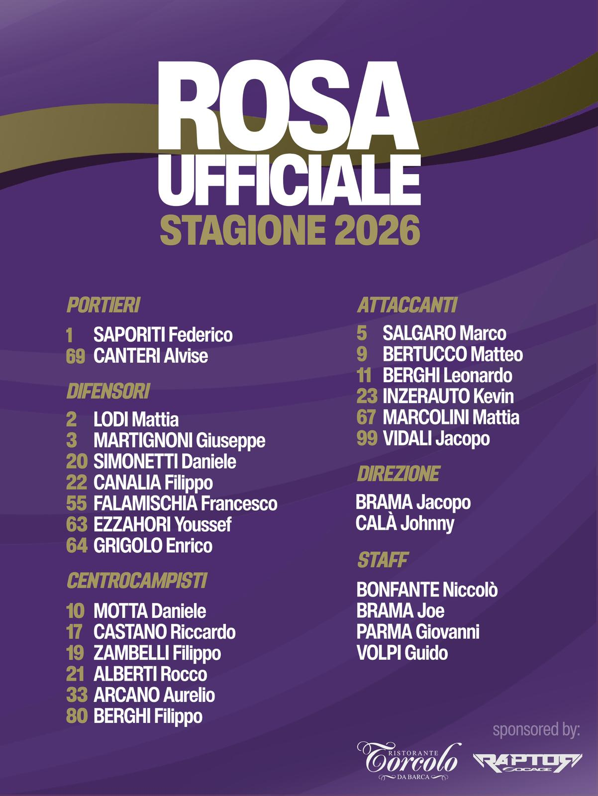

La Nostra Storia e Formazione
Fra i vicoli di Piazza Isolo, tanti anni fa, nasceva l'idea di portare sul campo dei migliori tornei locali l'identità di una compagnia, unita da valori umani e voglia di mettersi in gioco. Prendono vita i Bootay FC: fra le loro fila, Brama e soci danno spazio a talenti fra loro differenti nella tecnica e nel carattere, ma uniti dalla stessa visione del calcio e della vita. Col tempo si crea una famiglia che, fra imprese e disfatte, epiche rimonte e disastrose sconfitte, gloriose cavalcate e gironi passati per miracolo, anno dopo anno non smette di inseguire i più prestigiosi traguardi del calcio a 7 cittadino.